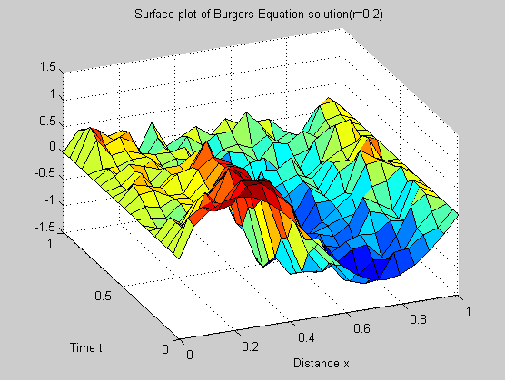

Numerical Solution of Stochastic Burger's Equation
01 Mar 2015
Introduction
In my third year project work, I was looking to work on something where I would have to solve a mathematical model computationally as well as learn important mathematical concepts. Luckily, I was able to get this project. While formulating the solution for Burger’s equation in MATLAB, I was also able covered the theoretical background surrounding this equation.
Introduction to Burger’s Equation
Burgers’ equation is a fundamental partial differential equation from fluid mechanics. It occurs in various areas of applied mathematics, such as modeling of gas dynamics and traffic flow. It is named for Johannes Martinus Burgers (1895–1981). It relates to the Navier-Stokes equation for incompressible flow with the pressure term removed. We will first see its derivation from Navier-Stokes equation.
We can write it as,
I covered the derivation of Burger’s Equation and an example of its application in traffic flow. I also went through some remarkable papers where they used the Burger’s Equation for formulating interesting problems, such as electricity pricing etc.
Stochastic Processes
A stochastic process is a process whose value changes over time in an uncertain way, and thus we only know the distribution of the possible values of the process at any time point. This is the probabilistic counterpart to a deterministic process. Instead of describing a process which can only evolve in one way (as in the case, for example, of solutions of an ordinary differential equation), in a stochastic or random process there is some indeterminacy: even if the initial condition (or starting point) is known, there are several (often infinitely many) directions in which the process may evolve.
As in the case of Burger’s equation, we cover the history of Stochastic processes, and introduce the formal definition of the Weiner’s Process and of 1-dimensional white-noise. For making the concept more digestable, a simple example of the stochastic heat equation is also provided.
The derivative of a Weiner process with respect to time is known as a “ 1-dimensional white noise “, .
Finite Difference Methods
The finite difference method is one of several techniques for obtaining numerical solutions to Equation. In all numerical solutions the continuous partial differential equation (PDE) is replaced with a discrete approximation. In this context the word ‘discrete’ means that the numerical solution is known only at a finite number of points in the physical domain. The number of those points can be selected by the user of the numerical method. In general, increasing the number of points not only increases the resolution (i.e., detail), but also the accuracy of the numerical solution.
We introduce the time-space mesh structure for applying Finite Difference method. A basic introduction is given for the Forward, Backward, Central difference formulations. On top of this we build the schemes for applying FDM to our problem, namely,
-
Forward-time, Centered-space(FTCS)
-
Backward-time, Centered-space(BTCS)
-
Crank-Nicolson Scheme(CNS)
Due to decrease in error and stability, we have used Crank-Nicolson Scheme in this project, which is given by
Solution for Stochastic Burger’s Equation
We have to resolove two problems,
-
Applying Finite-Difference Scheme properly to the non-linear term,
-
Applying Finite-Difference Scheme properly to the stochastic term.
After solving both the problems, using Taylor’s expansion and formal definitions respectively, we are able to reduce the problem to solving a set of linear-equations at each time step.
Links
The code for simulation of the solution has been written in Matlab.You can,